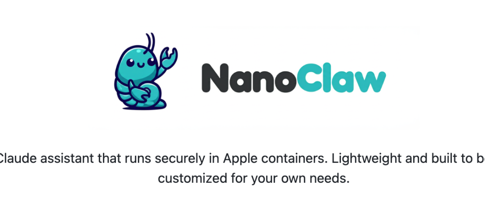
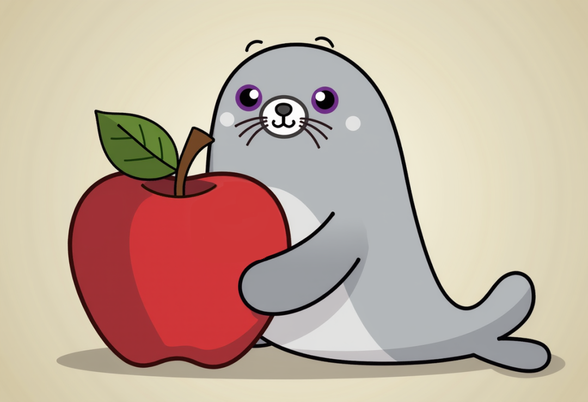
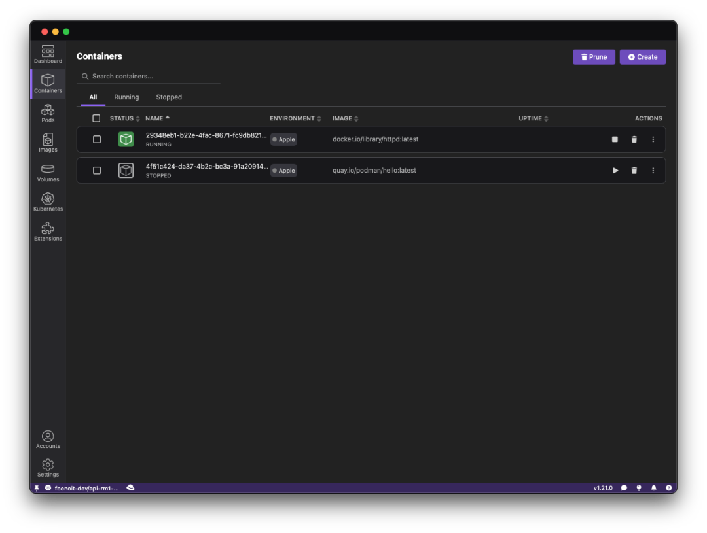

刷 Hacker News 的时候，被一个叫 nanoclaw 的项目击中了。
不只是因为它强，只是因为它“小而强”。

在这个 AI Agent 动不动就几十个 G 内存、试图接管你整个操作系统的年代，这个项目就像一股清流——或者说，像一把精准的手术刀，切开了我们对 AI 工具的某种盲目崇拜 。
它的核心代码只有 500 行 TypeScript。
/**
* Container Runner for NanoClaw
* Spawns agent execution in Apple Container and handles IPC
*/
import { spawn } from'child_process';
import fs from'fs';
import os from'os';
import path from'path';
import pino from'pino';
import {
CONTAINER_IMAGE,
CONTAINER_TIMEOUT,
CONTAINER_MAX_OUTPUT_SIZE,
GROUPS_DIR,
DATA_DIR
} from'./config.js';
import { RegisteredGroup } from'./types.js';
import { validateAdditionalMounts } from'./mount-security.js';
你没听错。500 行。
它不仅跑得飞快，还做了一件大多数臃肿的“AI 全家桶”做不到的事：利用 macOS 原生容器能力，把 Claude 关进了笼子里 。
今天我们不聊怎么 npm install，我们聊聊为什么这个项目代表了 2026 年技术人的某种“觉醒”。
为什么我们开始厌恶“全能神”？
回想一下你现在的 AI 开发环境：
你下载了一个 500MB 的 Electron 客户端（吃掉你 2GB 内存），你给它配置了 API Key，然后它问你要了文件读写权限、终端执行权限...
它告诉你：“给我权限，我能帮你重构整个项目。”
但作为开发者，你慌不慌？
反正我是慌的。现在的 AI Agent 越来越像“上帝”，它们索要的权限大到可怕。如果模型幻觉了呢？如果它把你的 .env 文件发到了公网呢？如果它执行了一个 rm -rf 呢？
现在的趋势是：工具越来越重，黑盒越来越黑。
而 nanoclaw 的作者 gavrielc 显然是个受够了的明白人。他在 README 里说得很难听但很真实：
"OpenClaw 有 52+ 个模块，那是瑞士军刀。NanoClaw 只有 500 行，它是为了满足我确切需求而生的。"
苹果原生容器的“降维打击”
nanoclaw 最性感的地方，在于它没有为了隔离去装一个笨重的 Docker Desktop，而是直接调用了 Apple Containers 。 podman-desktop[1]

这是 macOS 26 (Tahoe) 时代给开发者最大的礼物，但很多人还不知道怎么用。

简单科普下（不讲虚的）：
Apple Container 是 Swift 写的，专门为 Apple Silicon 优化的轻量级虚拟机。它能运行 Linux 容器，但它不像 Docker 早期在 Mac 上那样通过厚重的 VM 转换，而是极度贴合硬件 。 dev[2]
nanoclaw 的思路非常野：
每一个 Chat Session，都是一个独立的、沙盒化的容器环境。
看懂了吗？这才是真正的隔离。
当你让 Claude 帮你写代码时，它不是在你那存着 10 年照片和密钥的主机上“裸奔”，他的做法非常巧妙，在一个用完即焚的、纯净的 Linux 笼子里跳舞。
它能读写文件，但只能读写你划给那个笼子的文件。
它能执行命令，但炸也只能炸掉那个临时的笼子。
这不仅仅是安全，这是一种代码洁癖的胜利。
500 行代码的“掌控感”
我特意去翻了它的源码。
太舒服了。没有复杂的依赖注入，没有过度设计的工厂模式。就是朴素的 TypeScript，直来直去。
作者把核心逻辑压缩在 500 行以内，意味着什么？
意味着你可以在午饭时间读完它。
意味着如果它的 Prompt 有问题，你可以直接改。
意味着如果不想用 Claude 想换模型，你自己就能动手替换。
我们常说“在开发者圈子里，真正牛逼的大佬对对工具链的掌控是绝对的。
当你还在等官方更新修复 Bug 时，nanoclaw 的用户已经自己 Fork 并在本地改好了。
为什么你需要他
写这篇文章，不是为了让你把手里的 Cursor 或者 VS Code 卸载了。
我是想提醒大家，在 AI 甚至能帮我们写代码的今天，“造轮子”的能力反而变得更珍贵了。
如果你只是一个 API 的消费者，那你永远是被动的。那个臃肿的客户端更新什么功能，你就用什么功能；它塞给你什么广告，你就看什么广告。
但 nanoclaw 展示了另一种可能：
利用现成的基建（macOS 原生容器 + MCP 协议 + 强大的 LLM API），我们完全可以用极低的成本，组合出最适合自己的工具。
它不需要大而全，它只需要顺手。
写在最后
2026 年了，别再惯着那些臃肿的软件了。
如果你也是个对内存占用敏感、对隐私有洁癖、喜欢掌控一切的“原生党”，去 GitHub 上看看 nanoclaw。
不要只是 Star，去读它的代码。去看看它是怎么调度 Apple Container 的。
然后，也许你会关掉那个 2GB 的臃肿客户端，在终端里敲下一行命令，看着那个几毫秒启动的、完全属于你的 AI 助理，露出一个极客才懂的微笑。
这才是玩技术的乐趣，不是吗？
引用链接
[1] podman-desktop: https://podman-desktop.io/blog/apple-container-extension[2] dev: https://dev.to/aairom/first-hands-on-experience-with-apple-containers-12a7